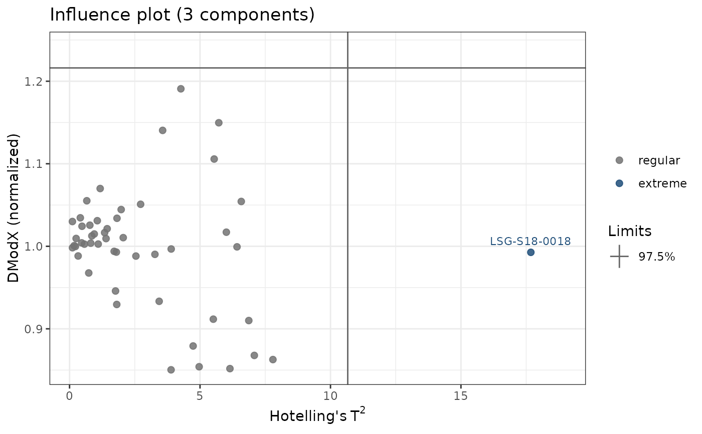

Computes the distance of each sample to a principal component analysis (PCA) model in the space of the variables (DModX, as in SIMCA): the residual standard deviation of the sample, normalized by that of the calibration samples, with its limits at one or more confidence levels, and Hotelling's \(T^2\) for the influence plot.
Usage
dmodx(
model,
k,
newdata = NULL,
conf_level = 0.975,
normalized = TRUE,
df = "effective",
t2_method = "f",
center = TRUE,
scale = FALSE
)Arguments
- model
A
stats::prcomp()fit that kept all its components (the default ofprcomp()), or a numeric matrix or data frame, on which a PCA is fitted withcenterandscale.- k
The number of components of the model.
- newdata
Optional new samples (a matrix or data frame with the variables of the model), whose distances are computed instead of those of the calibration samples.
- conf_level
The confidence level(s) of the limits: one or more values between 0 and 1. Default is 0.975.
- normalized
A logical: DModX relative to the residual standard deviation of the calibration samples (
TRUE, default), or absolute.- df
The degrees of freedom of the limit:
"effective"(default) or"simca"(see details).- t2_method
The distribution of the \(T^2\) limit of the samples of the model:
"f"(default) or"beta"(seehotelling_t2()).- center, scale
Passed to
stats::prcomp()whenmodelis data. Default isTRUEandFALSE.
Value
A tibble of class specproc_influence, with one row per sample:
sample, t2 and its limits (as for q_residuals()), dmodx, its
limits at each confidence level (dmodx_limit_97.5, ...), and outlier,
the type of the sample at the highest confidence level. Draw it with
plot_influence().
Details
With the residuals \(e_{ij}\) of the \(K\) variables after k
components, for \(N\) calibration samples (and \(A_0 = 1\) if the
data are centered),
$$s_i = \sqrt{\frac{\sum_j e_{ij}^2}{K - k}}\,\sqrt{\frac{N}{N - k -
A_0}}, \qquad s_0 = \sqrt{\frac{\sum_i \sum_j e_{ij}^2}{(N - k -
A_0)(K - k)}}$$
(the correction factor \(\sqrt{N / (N - k - A_0)}\) applies to the
calibration samples only). DModX is \(s_i / s_0\) (normalized, default)
or \(s_i\). Its squared ratio follows an F distribution with
\(\nu\) and \((N - k - A_0)\nu\) degrees of freedom, so the limit of
the normalized DModX is \(\sqrt{F_{1-\alpha}}\) (times \(s_0\) for the
absolute DModX).
SIMCA takes \(\nu = K - k\) (df = "simca"), as if the residuals of the
variables were independent. For spectra, with far more (correlated)
channels than samples, this gives a limit close to 1 that flags a large
share of ordinary samples. With df = "effective" (default), \(\nu\) is
the effective number of residual dimensions,
\(\theta_1^2 / \theta_2\) from the eigenvalues \(\lambda_a\) of the
components left out (\(\theta_j = \sum_{a > k} \lambda_a^j\), as in
Box's approximation of Q), which is \(K - k\) when the residuals are
independent with equal variances. DModX is then consistent with the Q
residuals of q_residuals(), of which it is a scaled square root.
References
Wold, S., Sjöström, M. (1977). SIMCA: a method for analyzing chemical data in terms of similarity and analogy. In Kowalski, B.R. (ed.), Chemometrics: Theory and Application, ACS Symposium Series 52, American Chemical Society, Washington, pp. 243-282.
Eriksson, L., Johansson, E., Kettaneh-Wold, N., Trygg, J., Wikström, C., Wold, S. (2006). Multi- and Megavariate Data Analysis, Part I, 2nd ed. Umetrics Academy, Umeå.
Box, G.E.P. (1954). Some theorems on quadratic forms applied in the study of analysis of variance problems, I. Annals of Mathematical Statistics, 25(2):290-302.
Examples
if (rlang::is_installed("HotellingEllipse", version = "1.3.0")) {
data(soilLIBS)
spectra <- average(soilLIBS[-(2:8)], Sample)
pca <- stats::prcomp(spectra[-1], scale. = TRUE)
d <- dmodx(pca, k = 3)
d[d$outlier != "regular", ]
plot_influence(d, label = spectra$Sample)
}
